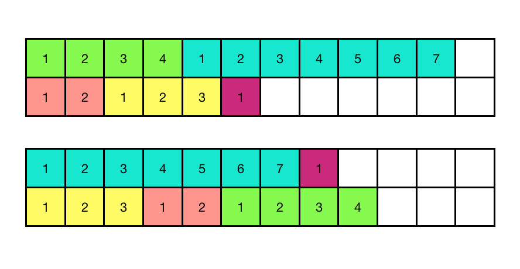

La teoría de colas es un área de las matemáticas que estudia el comportamiento de líneas de espera. Los trabajos que están esperando ejecución en un cluster esencialmente forman una línea de espera. Medidas de interés que ayudan caracterizar el comportamiento de una línea de espera incluyen, por ejemplo, el tiempo total de ejecución. En esta práctica vamos a estudiar el efecto del orden de ejecución de trabajos y el número de núcleos utilizados en esta medida.
Como trabajos ejemplo, fáciles de entender y con tiempos de ejecución diversos para diferentes entradas, vamos a utilizar la examinación de sí o no un número entero dado es un número primo, queriendo decir que no sea divisible entre ningún entero mayor a uno o menor a si mismo. Para no batallar, utilizaremos el algoritmo más sencillo imaginable: dado $n$, lo intentamos dividir entre los enteros desde 2 hasta $n - 1$. Si no hallamos ninguna división exacta, es decir, el residuo de la división nunca vale cero, entonces $n$ es primo. A su versión más burra, el algoritmo es éste:
primo <- function(n) {
if (n < 3) {
return(TRUE)
}
for (i in 2:(n-1)) {
if (n %% i == 0) { # residuo es cero
return(FALSE)
}
}
return(TRUE)
}
resultados <- numeric() # un vector vacio
for (n in 1:100) {
resultados <- c(resultados, primo(n)) # combinar vectores
}
cat(resultados, "\n")
def primo(n):
if n < 3:
return True
for i in range(2, n):
if n % i == 0:
return False
return True
resultados = [primo(n) for n in range(1, 101)]
print(resultados)
Aquí hay algunas redundancias obvias. Si $n$ ni era divisible
entre $2$, tampoco será divisible entre ningún otro
número par. Por otro lado a veces se quiere incluir uno como
un número primo, aunque algunos matemáticos no
están de acuerdo. Solamente hay que cuidar que en la llamada
a seq el final no esté menor que el inicio.
Cambiamos además a que esté guardando solamente
aquellos números que sí fueron primos.
primo <- function(n) {
if (n < 4) {
return(TRUE)
}
if (n %% 2 == 0) { # par
return(FALSE)
}
for (i in seq(3, max(3, n - 1), 2)) {
if (n %% i == 0) {
return(FALSE)
}
}
return(TRUE)
}
primos <- numeric()
for (n in 1:100) {
if (primo(n)) {
primos <- c(primos, n)
}
}
cat(primos, "\n")
def primo(n):
if n < 4:
return True
if n % 2 == 0:
return False
for i in range(3, n - 1, 2):
if n % i == 0:
return False
return True
primos = []
for n in range(1, 101):
if primo(n):
primos.append(n)
print(primos)
Además, si $n$ tiene factores, es decir $n = p \times q$,
entonces el menor de los factores $p$ y $q$ no puede ser mayor que
$\sqrt{n}$, lo que nos proporciona otra mejora. Paralelizamos de una
vez, pero para variar, con la rutina foreach del
paquete doParellel:
primo <- function(n) {
if (n < 4) {
return(TRUE)
}
if (n %% 2 == 0) {
return(FALSE)
}
for (i in seq(3, max(3, ceiling(sqrt(n))), 2)) {
if (n %% i == 0) {
return(FALSE)
}
}
return(TRUE)
}
suppressMessages(library(doParallel))
registerDoParallel(makeCluster(detectCores() - 1))
primos <- foreach(n = 1:300, .combine=c) %dopar% primo(n)
stopImplicitCluster()
print(paste(sum(primos), "primos encontrados"))
from math import ceil, sqrt
def primo(n):
if n < 4:
return True
if n % 2 == 0:
return False
for i in range(3, int(ceil(sqrt(n))), 2):
if n % i == 0:
return False
return True
import multiprocessing
if __name__ == "__main__":
with multiprocessing.Pool() as pool:
primos = pool.map(primo, range(1, 3001))
Ahora, medimos cuánto tiempo esto toma, promediando la medición sobre unas 30 repeticiones.
primo <- function(n) {
if (n < 4) {
return(TRUE)
}
if (n %% 2 == 0) {
return(FALSE)
}
for (i in seq(3, max(3, ceiling(sqrt(n))), 2)) {
if (n %% i == 0) {
return(FALSE)
}
}
return(TRUE)
}
d <- 10000 # desde
h <- 20000 # hasta
replicas <- 30
suppressMessages(library(doParallel))
registerDoParallel(makeCluster(detectCores() - 1))
tiempos <- numeric()
for (r in 1:replicas) {
# tomamos el "elapsed" de la salida de system.time, es el tercer dato
t <- system.time(foreach(n = d:h, .combine=c) %dopar% primo(n))[3]
tiempos <- c(tiempos, t)
}
stopImplicitCluster()
summary(tiempos)
$ Rscript p3.R
Min. 1st Qu. Median Mean 3rd Qu. Max.
1.657 1.694 1.717 1.735 1.753 1.948
from math import ceil, sqrt
def primo(n):
if n < 4:
return True
if n % 2 == 0:
return False
for i in range(3, int(ceil(sqrt(n))), 2):
if n % i == 0:
return False
return True
import multiprocessing
from time import time
from scipy.stats import describe # instalar con pip3
if __name__ == "__main__":
d = 10000
h = 20000
replicas = 30
tiempos = []
with multiprocessing.Pool() as pool:
for r in range(replicas):
antes = time()
primos = pool.map(primo, range(d, h + 1))
despues = time()
tiempos.append(despues - antes)
print(describe(tiempos))
$ python3 p3.py
DescribeResult(nobs=30, minmax=(0.002601146697998047, 0.004113912582397461), mean=0.002804263432820638, variance=7.623356338428139e-08, skewness=3.736981141295009, kurtosis=15.176218040916307)
Probamos diferencias entre tres posibles formas de ordenar los números candidato.
$ Rscript ordering.R
Min. 1st Qu. Median Mean 3rd Qu. Max.
0.3090 0.3145 0.3170 0.3188 0.3207 0.3370
Min. 1st Qu. Median Mean 3rd Qu. Max.
0.3080 0.3140 0.3165 0.3158 0.3178 0.3220
Min. 1st Qu. Median Mean 3rd Qu. Max.
0.3120 0.3137 0.3165 0.3192 0.3178 0.3510
$ python3 p3.py
DescribeResult(nobs=10, minmax=(0.0009708404541015625, 0.0022687911987304688), mean=0.0011686563491821289, variance=1.5326116340474982e-07, skewness=2.5445349876374963, kurtosis=4.724180952045165)
DescribeResult(nobs=10, minmax=(0.0009329319000244141, 0.0011661052703857422), mean=0.00101776123046875, variance=5.300911551684192e-09, skewness=0.7390071514127607, kurtosis=-0.32873181417875097)
DescribeResult(nobs=10, minmax=(0.0009510517120361328, 0.001111745834350586), mean=0.0009946107864379882, variance=2.175221425204654e-09, skewness=1.7138768839750793, kurtosis=2.0835544483893766)
Se ven ligeras variaciones. La tarea es sobre la examinación sistemática de éstas. El problema de ordenamiento de trabajos con la finalidad de minimizar el tiempo total de ejecución se llama calendarización (inglés: scheduling) de tareas. En la siguiente ilustración, cada grupo de bloques de un mismo color es una tarea y cada renglón representa un núcleo. Las tareas se asignan a los núcleos una por una y tienen una duración pre-establecida. El renglón que se llena más que los demás determina el tiempo total de ejecución de esas tareas. Asignando las tareas diferentemente entre los núcleos produce variaciones en ésta.

Examina cómo las diferencias en los tiempos de ejecución de los diferentes ordenamientos cambian cuando se varía el número de núcleos asignados al cluster, utilizando como datos de entrada un vector que contiene primos grandes y no-primos chicos, aplicando pruebas estadísticas adecuadas y visualización científica clara e informativa.
El primer reto es modificar la tarea por realizar a que se encuentren todos los divisores del número (es decir, todos los enteros mayores a uno y menores al número mismo que lo dividen exactamente y examinar si las conclusiones cambian.
El segundo reto es modificar el primer reto a que encuentre solamente los factores y sus multiplicidades, es decir, que encuentre para $n$ aquellos números primos $1 < p \leq n$ y sus potencias para que el producto de los factores con esas potencias de $n$. Nuevamente hay que examinar si este cambio afectó las conclusiones del experimento de la tarea.
https://satuelisa.github.io/simulation/p3.html